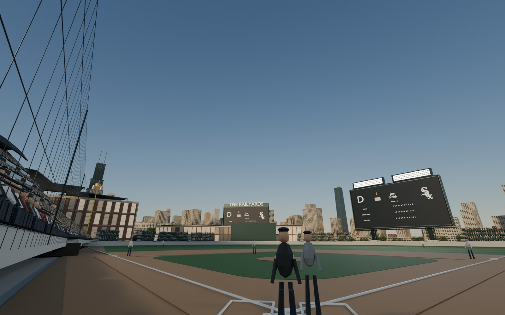
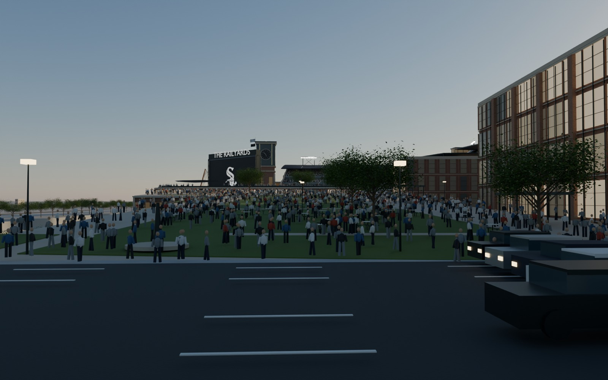
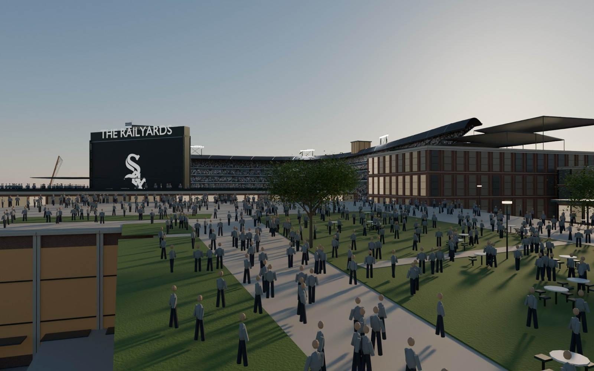
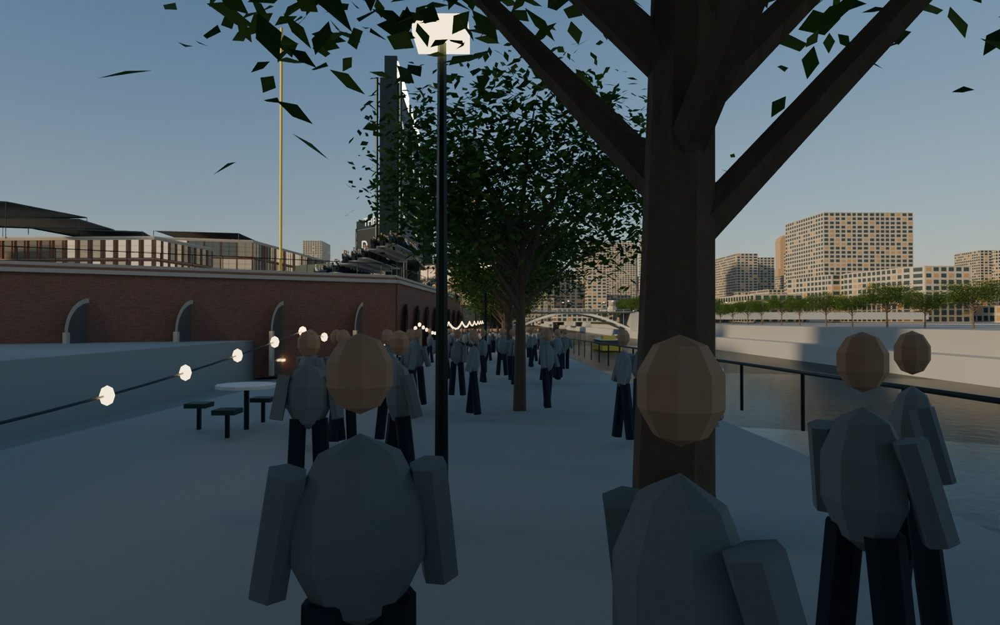
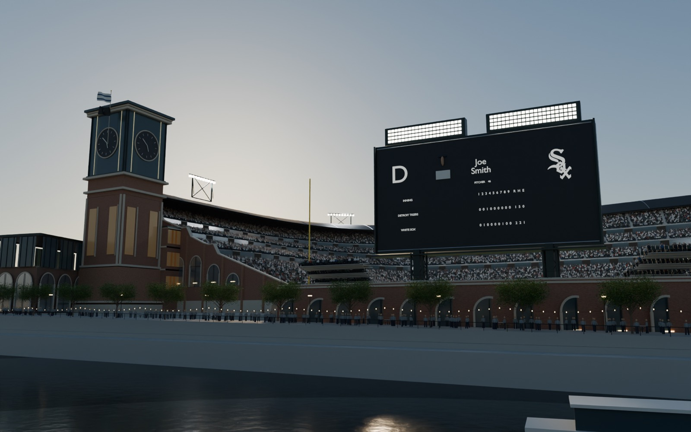
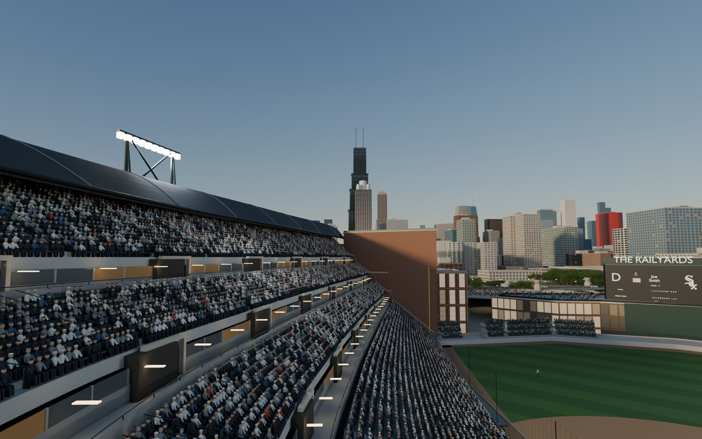

Behind home plate, field level. A batter’s view: the boards, the outfield banks, and above them the near South Loop towers with the Loop to the left. The lake is behind those towers and cannot be seen from here." loading="lazy">

Roosevelt Road, west end of the bridge. Looking south over the raised park toward the outfield entrance, with the Northwestern Medicine building on the right." loading="lazy">
On the park deck. Approaching the outfield entry above the bleachers; the bowl and the centre-field board ahead, the riverwalk below to the left." loading="lazy">
Lower riverwalk, walking north. The brick arcade under the right-field seats on the left, the river on the right, the Roosevelt bridge ahead." loading="lazy">
From the east bank. Across the river: the clock tower, the river arcade, the right-field board and the bleachers behind it." loading="lazy">


Left-field upper deck. Willis Tower, the lit crown of 311 South Wacker, the Board of Trade." loading="lazy">Coming next: short camera moves through these same spots (a walk down the riverwalk, a slow turn from the press box) once materials and crowd variation are further along.